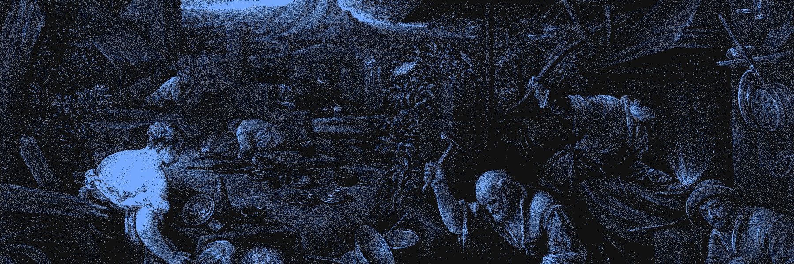
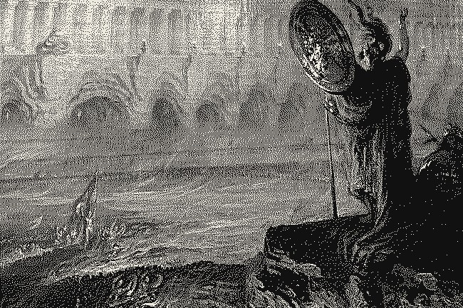

The Trillion-Parameter Desk
Meta released Muse Spark Open on October 15: 816 billion total parameters, 42 billion active, natively multimodal, a one-million-token context window. Apple, the same day, published a deployment running it across four Mac Studios at more than 36 tokens per second. That is a frontier-class model answering faster than most people read, on hardware a small lab can buy. The capability is no longer the question. The cost is.
What it means for your hardware: the number that matters is the active count, not the total. Muse Spark Open is a mixture-of-experts model, so each token only touches a fraction of its weights — roughly 42B worth per token instead of 816B. That is why a model this large can behave, at inference time, like something much smaller in compute terms. Apple's contribution is the plumbing: unified memory lets two M5 Ultra Mac Studios present close to a terabyte as one address space, and RDMA over Thunderbolt stitches them together. Two machines behave like one supercomputer. Four push further.
What is measured, what is claimed, what is uncertain.
Claimed by the vendor: the 36+ tokens per second figure is Apple's own benchmark table for four machines. It is a credible engineering result from the vendor that built the stack, not an independent third-party run. Treat it as a ceiling until someone reproduces it.
Claimed by Meta: calling Muse Spark Open "the most capable US open-weight model to date" is positioning, not a benchmark. The architecture and license are facts; the superiority claim is marketing.
Measured elsewhere, with caveats: the Linux multi-GPU path is documented in DwarfStar's repository, which reports an eight-L40S setup reaching about 126 tokens per second aggregate across 16 concurrent sessions. That is a single project's reported number, not a controlled benchmark, but it describes a real multi-user local server rather than a one-off demo.
Three short items worth your time this week.
The quantization floor keeps dropping. DwarfStar's recipes spend most compression on routed experts — IQ2_XXS gate/up and Q2_K down, guided by an importance matrix — while keeping other components at higher precision. Community builds report Qwen 3.8-27B running on an iPhone 18 Neural Engine at 15 to 70 tokens per second in 1.5 bits per weight. Those are community claims, not lab measurements. Four-bit is no longer the floor.
"Bigger than your RAM" is now a design assumption. BigMoeOnEdge, an adaptive streaming optimizer for MoE models, claims it keeps what every token needs in memory and streams the rest from storage on demand, with output identical to running fully in memory. That is the project's claim, on stock llama.cpp. If it holds, a model several times larger than RAM becomes ordinary rather than an error condition.
The economics are the wall. A 256GB Mac Studio starts at $9,499. Four of them is a substantial purchase. Whether self-hosting recoups that against falling API prices is a bet, and the honest answer is that nobody knows how long the window stays open. The capability is solved; the payback is not.

The whole stack now agrees on the same approach: park the cold experts, stream the rest, and treat bigger-than-memory as the normal case. The remaining gap is cost — and cost is the one number that reliably falls.
Sources
- Meta AI Research, Introducing Muse Spark Open.
- Apple Machine Learning Research, Local and Distributed Large LLM Inference with MLX and RDMA on Mac Studio.
- DwarfStar / ds4, github.com/antirez/ds4.
- BigMoeOnEdge, github.com/Helldez/BigMoeOnEdge.
- Ignis, github.com/gpillon/ignis.